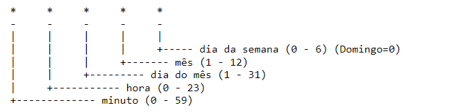

◉Agendamento de tarefas
O Cron Job é uma ferramenta de agendamento de tarefas que permite automatizar a execução de comandos em um determinado momento ou
com uma determinada frequência. Com o Cron Job, você pode automatizar tarefas como backups de bancos de dados, envio de relatórios
por e-mail, atualizações de software e muito mais, economizando tempo e esforço no gerenciamento do seu servidor.
➤ O que é o Cron Job e como ele funciona
O Cron Job é uma ferramenta de agendamento de tarefas em sistemas Unix e Unix-like. Ele permite agendar a execução de comandos ou scripts
em um momento específico ou com uma determinada frequência.
O Cron Job é composto por um arquivo de configuração chamado crontab, que contém as informações de agendamento das tarefas, e um daemon
que é responsável por executar essas tarefas nos momentos programados.
As tarefas podem ser agendadas em intervalos de minutos, horas, dias, semanas ou meses, e as expressões Cron são utilizadas para especificar
o momento exato de execução. As expressões Cron utilizam campos separados por espaços que representam os diferentes elementos da data e hora
em que a tarefa deve ser executada, como minutos, horas, dias do mês, mês e dia da semana.
Uma vez agendadas, as tarefas são executadas automaticamente pelo Cron Job, sem a necessidade de intervenção do usuário. É possível agendar
tarefas para uma hora específica do dia ou para períodos de tempo específicos, o que é útil para executar backups, atualizações de software,
envio de e-mails e outras tarefas rotineiras.
➤ Como funciona a sintaxe do Cron Job?
A sintaxe do cron job consiste em cinco campos separados por espaços, que indicam o horário e a frequência de execução da tarefa.
Os cinco campos são os seguintes:

Cada campo pode ser preenchido com um valor numérico, um intervalo de valores separados por um hífen, uma lista de valores separados
por vírgula, um valor com um intervalo de tempo especificado usando uma barra ou o caractere especial “*” para indicar “qualquer valor”.
Por exemplo, se quisermos agendar uma tarefa para ser executada às 9h da manhã todos os dias da semana, a sintaxe seria a seguinte:
0 9 * * *
O primeiro campo representa o minuto, então “0” indica que a tarefa será executada no início da hora. O segundo campo representa a hora,
então “9” indica que a tarefa será executada às 9h da manhã. Os últimos três campos indicam que a tarefa deve ser executada todos os dias
do mês, todos os meses e em todos os dias da semana.
Além disso, é possível definir um comando ou script a ser executado, adicionando-o no final da linha de configuração. Por exemplo:
0 9 * * * /usr/bin/meu-script.sh
Isso significa que o script /usr/bin/meu-script.sh será executado às 9h da manhã todos os dias da semana.
➤ Como criar um Cron Job via linha de comando
O comando de linux crontab permite agendar comandos, scripts e programas para serem executados automaticamente em intervalos regulares de
tempo. Aqui estão os passos básicos para usar o crontab:
1 - Abra um terminal de linha de comando.
2 - Digite o comando crontab -e para editar o arquivo de agendamento do usuário atual. Para saber editar o arquivo, é recomendável conhecer
melhor sobre os editores de texto de terminal como o vim. Confira como usar o editor de texto Vim do Linux.
3 - Adicione as linhas que descrevem as tarefas que deseja agendar, usando a sintaxe apropriada.
4 - Salve e feche o arquivo de agendamento.
Aqui está um exemplo de sintaxe para agendar uma tarefa para ser executada a cada hora:
0 * * * * /usr/bin/comando-a-ser-executado
Nesse exemplo, 0 indica que a tarefa deve ser executada quando o relógio do sistema marca o início da hora (00:00, 01:00, 02:00, etc.).
Os asteriscos após o número zero indicam que a tarefa deve ser executada em qualquer dia do mês, qualquer mês do ano, qualquer dia da semana.
/usr/bin/comando-a-ser-executado é o caminho completo para o comando, script ou programa que você deseja executar.
Existem várias variações do comando crontab, incluindo:
crontab -l: lista as tarefas agendadas atualmente.
crontab -r: remove todas as tarefas agendadas do usuário atual.
crontab -u
crontab -e -u
crontab -i: solicita confirmação antes de remover todas as tarefas agendadas do usuário atual.
Essas são algumas das variações mais comuns do comando crontab. Consulte o manual do usuário para obter mais informações sobre como usar
o crontab em um sistema específico.